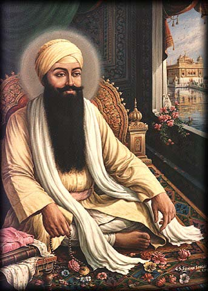

Guru Ram Das Ji

hai Ram Das Ji, later Guru Ram Das Ji, faced a challenging childhood, orphaned at age 7,
selling chickpeas to survive. In Basarke, near Amritsar, he met Bhai Amar Das Ji. Later,
Guru Amar Das Ji arranged Bhai Ram Das Ji's marriage to Bibi Bhani Ji, playing a crucial
role in building Baoli Sahib. Facing opposition, Bhai Ram Das Ji defended Sikhi to Akbar.
He and Guru Amar Das Ji founded Amritsar, establishing trade, Santokhsar Sarovar, and a
Langar. When Guru Amar Das Ji debated successors, a platform test revealed Bhai Ram Das
Ji's love for seva. He became Guru at 40, with Guru Amar Das Ji directing future Gurus
from his family. Guru Ram Das Ji, given extra years by Guru Amar Das Ji, expanded
Amritsar and created the Lavaan. The Lavaan detail spiritual growth stages for married
couples, used in Sikh weddings.